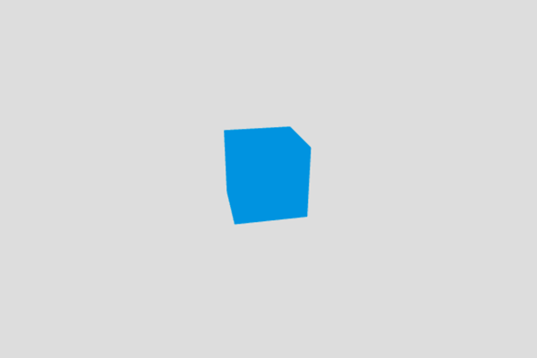

A typical 3D scene in a game — even the simplest one — contains standard items like shapes located in a coordinate system, a camera to actually see them, lights and materials to make it look better, animations to make it look alive, etc. Three.js, as with any other 3D library, provides built-in helper functions to help you implement common 3D functionality more quickly. In this article we'll take you through the real basics of using Three, including setting up a development environment, structuring the necessary HTML, the fundamental objects of Three, and how to build up a basic demo.
Note: We chose Three because it is one of the most popular WebGL libraries, and it is easy to get started with. We are not trying to say it is better than any other WebGL library available, and you should feel free to try another library, such as CopperLicht, GLGE, OSG.js, O3D, or any others that you think will work for you.
Environment setup
To start developing with Three.js, you don't need much. You should:
- Make sure you are using a modern browser with good WebGL support, such as the latest Firefox or Chrome.
- Create a directory to store your experiments in.
- Save a copy of the latest minimized Three.js library inside your directory.
- Open the Three.js documentation in a separate tab — it is useful to refer to.
HTML structure
Here's the HTML structure we will use.
<!DOCTYPE html>
<html>
<head>
<meta charset="utf-8">
<title>MDN Games: Three.js demo</title>
<style>
body { margin: 0; padding: 0; }
canvas { width: 100%; height: 100%; }
</style>
</head>
<body>
<script src="three.min.js"></script>
<script>
var WIDTH = window.innerWidth;
var HEIGHT = window.innerHeight;
/* all our JavaScript code goes here */
</script>
</body>
</html>
It contains some basic information like the document <title>, and some CSS to set the width and height of the <canvas> element that Three.js will insert on the page to 100% so that it will fill the entire available viewport space. The first <script> element includes the Three.js library in the page, and we will write our example code into the second one. There are two helper variables already included, which store the window's width and height.
Before reading on, copy this code to a new text file, and save it in your working directory as index.html.
Renderer
A renderer is a tool that displays scenes right in your browser. There are a few different renderers: WebGL is the default one, and the others you can use are Canvas, SVG, CSS and DOM. They differ in a way everything is rendered, so the WebGL implementation will work differently than the CSS one, but the idea is to have it look exactly the same for the end user. Thanks to this approach, a fallback can be used if the primary technology is not supported by the browser.
var renderer = new THREE.WebGLRenderer({antialias:true});
renderer.setSize(WIDTH, HEIGHT);
renderer.setClearColor(0xDDDDDD, 1);
document.body.appendChild(renderer.domElement);
We are creating a new WebGL renderer, setting it's size to fit the whole available space on the screen and appending the DOM structure to the page. You probably noticed the antialias parameter in the first line — this enables the edges of the shapes to be rendered a little more smoothly. The setClearColor() method sets our background to a light gray colour instead of the default black one.
Add this code into the second <script> element, just below the JavaScript comment.
Scene
A scene is the place where everything happens. When creating new objects in the demo, we will be adding them all to the scene to make them visible on the screen. In three.js, the scene is reperesented by a Scene object. Let's create it, by adding the following line below our previous lines:
var scene = new THREE.Scene();
Later on we will be using the .add() method to add objects to the scene.
Camera
We have the rendered scene, but we still need a camera to view the scene — imagine a movie set without any cameras. The following lines put the camera in place in the 3D coordinate system, and point it in the direction of our scene so people can actually see something:
var camera = new THREE.PerspectiveCamera(70, WIDTH/HEIGHT); camera.position.z = 50; scene.add(camera);
Add these lines to your code, below the prevous ones.
There are other types of camera available (Cube, Orthographic), but the simplest is the Perspective one. To initialize it we have to set its field of view and aspect ratio — the first one is used to set how much is seen, and a proper aspect ratio is important for the objects on the screen to have the right proportions when rendered and not look stretched. Let's explain the values we are setting in the code above:
- The value we set for the field of view, 70, is something we can experiment with — the higher the value, the greater the amount of scene the camera will show. Imagine a normal camera view, versus a fish eye effect, which allows a lot more to be seen. The default value is 50.
- The aspect ratio is set to the current width and height of the window so it will be dynamically adjusted. We could set a fixed ratio — for example 16 ⁄ 9, which is the aspect ratio of a widescreen TV. The default value is 1.
- The
zposition with the value of 50 units is the distance between the camera and the center of the scene on thezaxis — here we're moving the camera back so the objects on the scene can be viewed. 50 feels ok as it's not too near and not too far and the sizes of the objects allow them to stay on the scene within the given field of view. Thexandyvalues, if not specified, will default to 0.
You should experiment with these values and see how they change what you see in the scene.
Note: The distance values (e.g. for the camera z position) are unitless, and can basically be anything you deem suitable for your scene — milimeters, meters, feet, or miles — it's up to you.
Rendering the scene
Everything is ready, but we still can't see anything. Although we set the renderer up, we still have to actually render everything. Our render() function will do this job, with a little help from requestAnimationFrame(), which causes the scene to be re-rendered constantly on every frame:
function render() {
requestAnimationFrame(render);
renderer.render(scene, camera);
}
render();
On every new frame the render function is invoked and the renderer renders the scene and the camera. Right after the function declaration we're invoking it for the first time to start the loop, after which it will be used indefinitely.
Again add the new code below your previous additions, then try saving the file and loading it in your browser. You should now see a gray window. Congratulations!
Geometry
Now the scene is properly rendering we can start adding 3D shapes to it. To speed up development Three.js provides a bunch of predefined primitives that you can to create shapes instantly in a single line of code. There's cubes, spheres, cylinders and more complicated shapes available. Drawing the needed vertices and faces for given shape is taken care of by the framework, so we can focus on the high level coding. Let's start by defining the geometry for a cube shape — add the following just above the render() function:
var boxGeometry = new THREE.BoxGeometry(10, 10, 10);
In this case we define a simple cube that is 10 x 10 x 10 units. The geometry itself is not enough though — we also need a material that will be used for our shape.
Material
Material is that thing covering the object — the colors or texture on its surface. In our case we will use a simple blue color to paint our box. There are predefined materials that can be used: Basic, Phong, Lambert. We will play with the last two later on, but for now the Basic one should be enough:
var basicMaterial = new THREE.MeshBasicMaterial({color: 0x0095DD});
Add this line below the previous one.
Our material is ready, but what to do next?
Mesh
To apply the material to a geometry a mesh is used. It takes a shape and adds the specified material to every face:
var cube = new THREE.Mesh(boxGeometry, basicMaterial);
Again, add this line below the previous one.
Adding the cube to the scene
We've now created the actual cube using the geometry and material defined earlier. The last thing to do is to actually add the cube to our scene — add this line below the previous one:
scene.add(cube);
If you save and refresh now, your object will look like a square, because it's facing the camera. The good thing about objects is that we can move them on the scene however we want, for example rotating and scaling as we like. Let's apply a little bit of rotation to the cube, so we can see more than one face — again, add below the previous one:
cube.rotation.set(0.4, 0.2, 0);
Congratulations, you've created your first object in a 3D environment! It was easier than you thought, right? Here's how it should look:

And here's the code we have created so far:
You can also check it out on GitHub.
More shapes and materials
Now we will add more shapes to the scene and explore other shapes, materials, lighting, and more. Let's move the cube to the left to make space for some friends — add the following line just below the previous one:
cube.position.x = -25;
Now onto the shapes and materials: what would you say for a torus using the Phong material? Try adding the following lines just below the lines that define the cube.
var torusGeometry = new THREE.TorusGeometry(7, 1, 6, 12);
var phongMaterial = new THREE.MeshPhongMaterial({color: 0xFF9500});
var torus = new THREE.Mesh(torusGeometry, phongMaterial);
scene.add(torus);
Thee lines will add a torus geometry; the TorusGeometry() method's parameters define and the parameters are radius, tube diameter, radial segment count and tubular segment count. The Phong material should look more glossy than the simple color of the box that was using the Basic material, although at the moment it will just look black.
We can have even crazier predefined shapes; let's play some more — add the following lines below the ones that defined the torus:
var dodecahedronGeometry = new THREE.DodecahedronGeometry(7);
var lambertMaterial = new THREE.MeshLambertMaterial({color: 0xEAEFF2});
var dodecahedron = new THREE.Mesh(dodecahedronGeometry, lambertMaterial);
dodecahedron.position.x = 25;
scene.add(dodecahedron);
This time we are creating a dodecahedron, which is a shape containing twelve flat faces. The parameter DodecahedronGeometry() takes is the size of the object. We're using a Lambert material here, which is similar to Phong, but should be less glossy (again, black for now.) We're moving the object to the right, so it's not in the same place as the box or torus.
As mentioned above, the new objects currently just look black. To have both the Phong and Lambert materials properly visible we need a source of light.
Lights
There are various types of light sources available in Three.js; the most basic one is the PointLight, which works like a flashlight — shinig a spotlight in a given direction. Add the following below your shapre definitions:
var light = new THREE.PointLight(0xFFFFFF); light.position.set(-10, 15, 50); scene.add(light);
We define a white point of light, set it's position a bit away from the center of the scene so it can light up some parts of the shapes, and add it to the scene. Now everything works as it should — all three shapes are visible. You should check the documentation for other types of light like Ambient, Directional, Hemisphere or Spot, and experiment with placing them on the scene to see the effects.

This looks a little bit boring though. In a game something is usually happening — we can see animations and such — so let's try to breathe a little life into those shapes by animating them.
Animation
We already used rotation to adjust the position of the cube; we could also scale the shapes, or change thier positions. To show actual animation, we need to make changes to these values inside the render loop so, they are updated on every frame.
Rotation
Rotating is quite easy — all you need to do is to add a defined value to the given direction of the rotation on each frame. Add this line of code right after the requestAnimationFrame() invocation in the render function:
cube.rotation.y += 0.01;
It will rotate the cube on every frame by a tiny bit, so it will look like a smooth animation.
Scaling
We can also scale a given object. By applying a constant value we could make it grow or shrink once, but let's make it more interesting. First, we will need a helper variable called t for counting the elapsed time. Add it right before the render() function:
var t = 0;
Now let's increase the value by a given constant value on each frame of the animation; add the following lines just below the requestAnimationFrame() invocation:
t += 0.01; torus.scale.y = Math.abs(Math.sin(t));
This way we'll be able to use Math.sin and end up with quite an interesting result: this will scale the torus and repeat the whole process, as sin is a periodic function. We're wrapping the scale value in Math.abs to pass the absolute values (greater or equal to 0), because sin is between -1 and 0, and for negative values the torus might render unexpectedly (in this case it looks black half the time.)
Now onto the movement part.
Moving
Beside rotation and scaling we can also move objects around the scene. Add the following, again just below the requestAnimationFrame() invocation:
dodecahedron.position.y = -7*Math.sin(t*2);
This will move the dodecahedron up and down by applying the sin() value to the y axis on each frame, with a little bit of adjustment to make it look cooler. Try changing the values to see how it affects the animations.
Conclusion
Here's the final piece of the code:
You can also see it on GitHub and fork the repository if you want to play with it yourself locally. Now you know the basics of Three.js, you can get back to the parent page about 3D on the Web.
You should also try learning raw WebGL, so you can get a better understanding of what's going on. See our WebGL documentation.